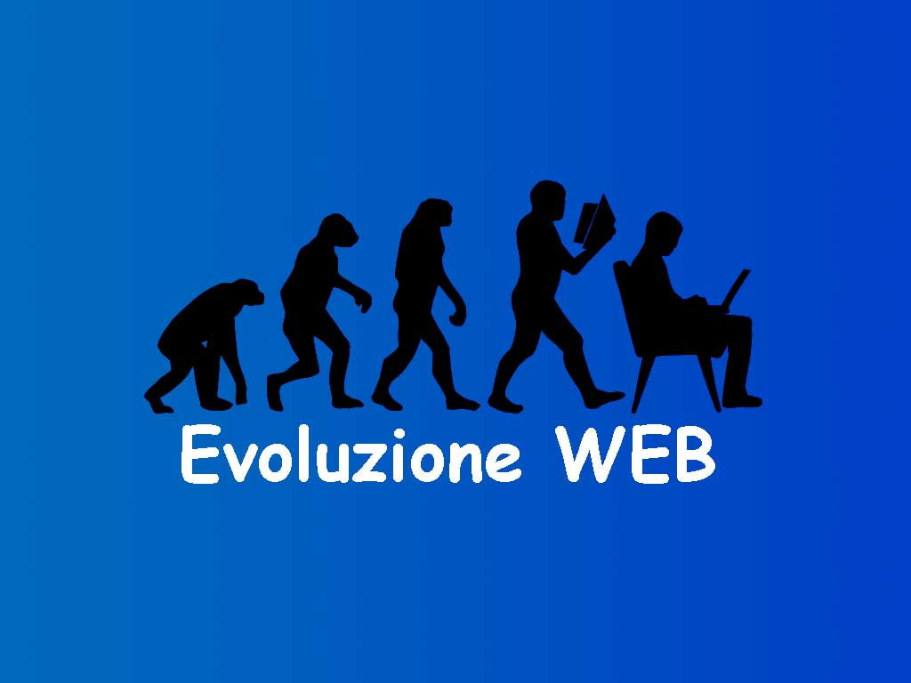

Dal primo messaggio inviato alla rete globale che conosciamo oggi
La nascita di ARPANET, il precursore di Internet.
Tim Berners-Lee crea il primo sito web e rivoluziona il modo in cui comunichiamo.
Internet diventa una parte essenziale della vita quotidiana e l'accesso si espande globalmente.
L'avvento dei social network e la loro influenza sulla società e sulle relazioni personali.
Internet delle cose e la diffusione del 5G portano connessioni più veloci e dispositivi interconnessi.
Le prospettive future di Internet includono l'Intelligenza Artificiale e altre tecnologie emergenti.
Una panoramica sull'uso attuale di Internet nel mondo, con statistiche aggiornate e analisi.